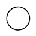
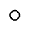
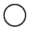
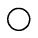

AIR CONDITIONING SYSTEM > SYSTEM DESCRIPTION |
| GENERAL |
The air conditioning system has the following controls.
| Control | Outline | |
| Neural Network Control | This control is capable of performing complex control by artificially simulating the information processing method of the nervous system of living organisms in order to establish a complex input/output relationship similar to that of a human brain. | |
| Automatic Recirculation Control | Automatically changes the air inlet mode to the fresh air or recirculation air mode according to the level of harmful elements in the outside air, cabin temperature, and outside temperature. | |
| Outlet Air Temperature Control | Based on the temperature set by the temperature control dial, neural network control calculates outlet air temperature based on input signals from various sensors. | |
| Pollen Removal Mode Control |
| |
| Left and Right Independent Control | The temperature settings for the driver and front passenger are controlled independently in order to provide separate vehicle interior temperatures for the right and left sides of the vehicle. | |
| Blower Control | Controls the blower motor in accordance with the airflow volume that has been calculated by neural network control based on the input signals from various sensors. | |
| Air Outlet Control | Automatically switches the air outlets in accordance with the outlet mode that has been calculated by neural network control. | |
| In accordance with the engine coolant temperature, ambient air temperature, amount of sunlight, required blower speed, outlet temperature and vehicle speed conditions, this control automatically switches the blower outlet to foot and defroster mode to prevent the windows from becoming fogged up when the ambient air temperature is low. | ||
| Air Inlet Control | Automatically controls the air inlet control damper to help achieve the calculated outlet air temperature that is required. | |
| Drives the air inlet control servo motor according to the operation of the air inlet control switch and moves the dampers to the fresh or recirculation position. | ||
| Compressor Control | The air conditioning amplifier assembly compares the A/C pulley speed signals, which are transmitted by the ECM (crankshaft position sensor). When the air conditioning amplifier assembly determines that the A/C pulley is locked, it turns off the magnet clutch assembly. | |
| Defroster Control | Defroster control logic is used to improve defroster performance. | |
| Rear Defogger Control | When the engine switch is on (IG) and the rear defogger switch is pushed, the system is activated to keep the defogger heater on for approx. 15 minutes. However, the operating time of the rear defogger can be extended up to approx. 255 minutes when both of the following requirements are met:
| |
| Memory Call Control | Memorizes the last front and rear air conditioning settings when the engine switch is turned from on (IG) to off in accordance with the ID code of the key that is used to operate the vehicle. The key-linked memory call control then recalls the settings if the key is used when the engine switch on (IG). This function operates when both of the following conditions are met:
| |
| Diagnosis | A Diagnostic Trouble Code (DTC) is stored in memory when the air conditioning amplifier assembly detects a problem with the air conditioning system. | |
| NEURAL NETWORK CONTROL |
| AUTOMATIC RECIRCULATION CONTROL |
When the automatic recirculation control is operating, the air conditioning amplifier assembly automatically changes the air inlet mode to the fresh air or recirculate air mode based on signals from the smog ventilation sensor, ambient temperature and room temperature sensors when the AUTO air inlet mode is selected.
The air conditioning amplifier assembly detects harmful elements (CO, HC, and NOx) based on a smog ventilation sensor signal and automatically switches the air inlet mode to the recirculate air mode to prevent such harmful elements from entering the cabin.
The air conditioning amplifier assembly detects cabin temperature based on a room temperature sensor signal and automatically switches the air inlet mode to the recirculate air mode to cool down the cabin temperature quickly.
The air conditioning amplifier assembly detects the outside temperature based on an ambient temperature sensor signal and automatically switches the air inlet mode to the fresh air mode to prevent the windshield from fogging up.
| MEMORY CALL CONTROL |
Memory call control memorizes the air conditioning system settings together with the ID code of the key that is being used.
When a key with memory is used to unlock the door, while the driver door is opened and the engine switch is turned on (IG), the memorized air conditioning system settings will be recalled.
The certification ECU will recognize the key during the unlock operation by reading the registered ID code.
Using this control, the air conditioning system setting preference that corresponds to each key can be memorized, enhancing usability.
The following air conditioning system settings can be memorized:
| Setting | Condition | |
| A/C Switch | On or Off | |
| AUTO Switch | On or Off | |
| Temperature Setting | Driver Side | LO, 18 to 32°C (65 to 85°F) or HI |
| Front Passenger Side | LO, 18 to 32°C (65 to 85°F) or HI | |
| Blower Fan Speed | Level 1 to 7 | |
| Air Inlet Mode | Fresh or Recirculate | |
| Air Outlet Mode | Face, Bi-Level, Foot, Foot/Defroster or Defroster | |
| REAR Switch*1 DUAL Switch*2 | On or Off | |
| Setting | Condition | |
| AUTO Switch | On or Off | |
| Temperature Setting | LO, 18 to 32°C (65 to 85°F) or HI | |
| Blower Fan Speed | Level 1 to 7 | |
| Air Outlet Mode | Face, Bi-Level or Foot | |
| POLLEN REMOVAL MODE CONTROL |
When the pollen removal mode switch is pressed, the pollen removal mode control is activated. Then, the air vent is switched to the FACE mode and recirculated pollen free air flows in the area around the upper parts of the bodies of the driver and front passenger.
When the pollen removal mode switch signal is input to the air conditioning amplifier assembly, the air conditioning amplifier assembly controls the magnet clutch assembly, recirculation damper servo sub-assembly, No. 1 air conditioning radiator damper servo sub-assembly (mode damper servo) and blower with fan motor sub-assembly as shown in the timing chart.
This control usually operates for approximately 3 minutes.
After this control stops operating, the air conditioning amplifier assembly automatically returns to the mode it was in just before the pollen removal mode switch was pressed.
| MODE POSITION AND DAMPER OPERATION |
Mode Position and Damper Operation
Front Air Conditioning Unit
| Control Damper | Operation Position | Damper Position | Operation |
| Air Inlet Control Damper | Fresh | A | Brings in fresh air. |
| Recirculation | B | Recirculates internal air. | |
| Air Mix Control Damper | MAX COOL to MAX HOT | E - D - C E' - D' - C' | Varies the mixture of cold air and hot air in order to regulate the temperature continuously from hot to cool. |
| MAX COOL Damper | MAX COOL | V | Open in the MAX COOL position. |
| Except MAX COOL | W | Close in all position except MAX COOL position. | |
| MAX HOT Damper | MAX HOT | Y | Open in the MAX HOT position. |
| Except MAX HOT | X | Closed in all position except MAX HOT position. | |
| Mode Control Damper | Face | F, I, N, T, X (FACE 1) F, J, N, T, X (FACE 2) | Air blows out of the front center registers and side registers. (FACE 1) Air blows out of the front center registers and side registers. In addition, air blows out slightly from the front and rear footwell register ducts. (FACE 2) |
Bi-level | G, L, N, T, X | Air blows out of the front center registers, side registers, and front and rear footwell register ducts. | |
Foot | H, M, P, T, W, Y (MAX HOT position) H, M, O, T, X (Except MAX HOT Position) | Air blows out of the front and rear footwell register ducts. In addition, air blows out slightly from the front defroster, side defroster, side registers and front center registers. | |
Foot/Def | H, K, R, T, W, Y (MAX HOT position) H, M, Q, T, X (Except MAX HOT Position) | Defrosts the windshield through the front defroster, side defroster and side registers while air is also blown out from the front and rear footwell register ducts. In addition, air blows out slightly from the front center registers. | |
Def | H, I, S, U, X | Defrosts the windshield through the front defroster and side defroster. |
Rear Air Conditioning Unit
| Control Damper | Operation Position | Damper Position | Operation |
| Mode Control Damper | Face | A | Air blows out from the rear roof registers. |
Bi-level | B | Air blows out from the rear roof registers and rear side registers. | |
Foot | C | Air blows out from the rear side registers. | |
| Air Mix Control Damper | MAX COLD to MAX HOT Temperature Setting | D, E | Varies the mixture of cold air and hot air in order to regulate the temperature continuously from hot to cold. |
| AIR OUTLETS AND AIRFLOW VOLUME |
Air Outlets and Airflow Volume
for Front Registers
| Indication (Mode) | Front Center Register | Side Register | Front Footwell Register | Rear Footwell Register | Front Defroster | Side Defroster |
| A | B | C | D | E | F | |
Face 1 |  | - | - | - | - | |
Face 2 |  | - | - | |||
Bi-level |  |  | - | - | ||
Foot | ||||||
Foot/Def | ||||||
Def | - | - | - | - |
for Rear Registers
| Indication (Mode) | Rear Roof Register | Rear Side Register |
| A | B | |
Face | - | |
Bi-level | ||
Foot | - |
| A/C LOCK SENSOR |
| No. 1 COOLER THERMISTOR |
| BLOWER WITH FAN MOTOR SUB-ASSEMBLY |
| AIR CONDITIONING HARNESS ASSEMBLY (BUS CONNECTOR) |
A BUS connector is used in the wire harness that connects the servo motor to the air conditioning amplifier assembly.
| Connector Type | Connected to |
| *1: Bus connector | No. 1 air conditioning radiator damper servo sub-assembly (driver side air mix damper servo) |
| *2: Bus connector | No. 1 air conditioning radiator damper servo sub-assembly (mode damper servo) |
| *3: Bus connector | No. 2 air conditioning radiator damper servo sub-assembly (front passenger side air mix damper servo) |
| *4: Bus connector | Recirculation damper servo sub-assembly |
| *5: Connector | Air conditioning amplifier assembly |
| *6: Connector | No. 1 cooler thermistor |
Each BUS connector has a built-in communication/driver IC which communicates with each servo motor connector, actuates the servo motor, and has a position detection function.
| SERVO MOTOR |
The pulse pattern type servo motor detects the relative position using 2-bit on/off signals.
The forward and reverse revolutions of this motor are detected using two signals, A and B, which output four types of patterns. The air conditioning amplifier assembly counts the number of pulse patterns in order to determine the stopped position.
| COOLER THERMISTOR (ROOM TEMPERATURE SENSOR) |
| COOLER THERMISTOR (AMBIENT TEMPERATURE SENSOR) |
| SMOG VENTILATION SENSOR |
The smog ventilation sensor detects harmful elements such as CO, HC and NOx present in the air outside of the vehicle. The sensor outputs a signal to the air conditioning amplifier assembly.
The sensitivity of the smog ventilation sensor can be adjusted. Adjustment can be done using the display and navigation module display.
| AUTOMATIC LIGHT CONTROL SENSOR (SOLAR SENSOR) |
The automatic light control sensor (solar sensor) consists of a photo diode, 2 amplifier circuits for the solar sensor and a frequency converter circuit for the light control sensor.
The automatic light control sensor (solar sensor) detects (in the form of changes in the current that flows through the built-in photo diode) the changes in the amount of sunlight from the LH and RH sides (2 directions) and outputs these sunlight intensity signals to the air conditioning amplifier assembly.